Memory Palace meets Pirate Adventure
Dead Reckoning uses the Method of Loci — an ancient memory technique where knowledge is stored in vivid spatial locations — and turns it into a pirate game. You don't read definitions. You stage knowledge into the world.
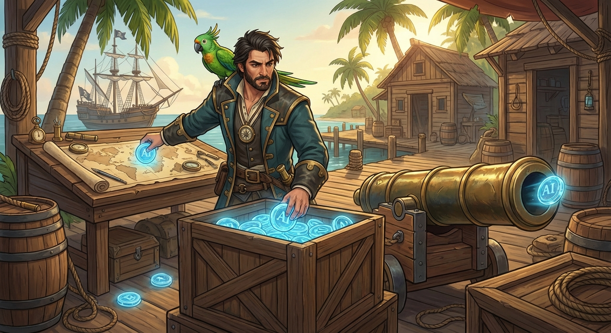
You don't collect knowledge. You stage it.
Every AI concept is mapped to a vivid, memorable physical object in the game world. When you place a concept, you're creating a spatial memory — exactly how the Method of Loci has worked for thousands of years.
Used by memory champions for millennia. You walk through a familiar place and "deposit" memories at specific locations. Later, you mentally walk the same path to retrieve them.
In this game, the pirate islands ARE your memory palace.
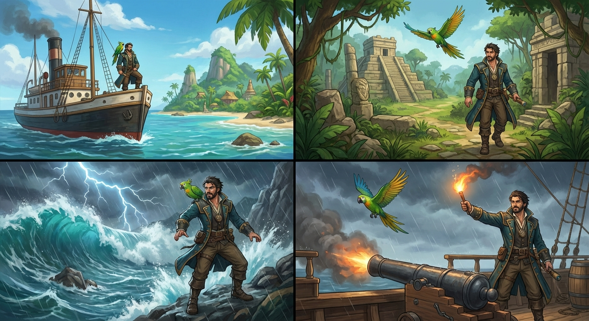
Every island follows the same satisfying 5-phase rhythm
Your ship auto-docks at a new island. The island name appears carved into a signpost — no UI overlay, pure environmental storytelling. The camera frames the island in portrait view, building anticipation.
Walk between 3 landmarks. Each reveals one concept card. Place the concept into its landmark — "Training Data" drops into the fish crates, "Model" unfolds on the chart table. This is a safe sandbox — no threats during encoding. Take your time and build strong spatial associations.
The sky darkens. The sea churns. Fog rolls in, lightning cracks, or a red sail appears on the horizon. The environment transforms to signal danger — and the recall phase begins.
Icon-based spatial riddles test your memory. "What feeds the learning?" shows a fish icon and an empty crate — you must tap the Dock Crates landmark. Difficulty climbs within the encounter. Novice assists activate after failures; expert paths reward perfection.
Threat defeated! Earn a Chart Fragment, ship upgrade, or rare relic. Watch the sea chart fill in. See a preview of the next island as a silhouette on the horizon. The cycle begins again.
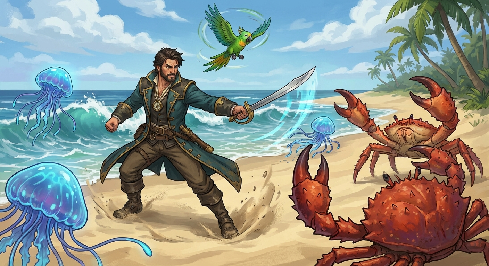
Pokémon-style turn-based battles against island creatures
While exploring islands, you'll encounter enemies — crabs, jellyfish, burrowers, and more. Touching an enemy triggers a turn-based combat overlay inspired by classic Pokémon battles. You have two options each turn:
After your turn, the enemy retaliates. Three well-placed attacks defeat most enemies. On victory, your HP refills and you earn +100 bonus points plus a Skill Point.
Quick attacks are safe but slow. Charged attacks are devastating but leave you vulnerable if you mistime. The charge meter fills over 1.2 seconds — overshoot and you waste a turn.
Master the charge timing for one-shot kills with the right skill upgrades.
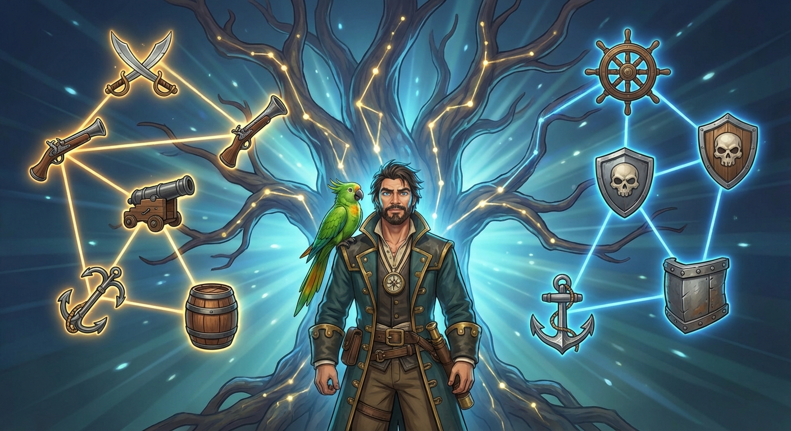
Earn Skill Points through combat and learning — invest them to power up
+20% attack damage per level. 3 levels available. The foundation of the Offence branch — makes every strike hit harder.
Offence · Cost: 1 SP-20% damage taken per level. 3 levels available. The foundation of the Defence branch — each enemy hit stings less.
Defence · Cost: 1 SP+20% charge speed per level. Fills the power meter faster, letting you execute devastating charged attacks more quickly.
Offence · Cost: 2 SP+10% max HP per level. More staying power in extended fights. Stack with Iron Hull for near-invulnerability.
Defence · Cost: 1 SP+0.5 maximum charge multiplier per level. At max level, a fully charged attack deals 3× base damage — enough to one-shot most enemies.
Offence · Cost: 2 SP+50 victory points per level. Turn every combat victory into a score multiplier. Chase the leaderboard with maxed Plunder.
Offence · Cost: 2 SPSkill Points are earned through two activities:
This means exploration and learning are just as rewarding as fighting. A player who carefully places all concepts earns as many upgrade points as one who battles every enemy. 21 total SP are needed to max every skill.
Offence: Sharp Cutlass → Swift Charge → Thunder Strike, with a Plunder side-branch.
Defence: Iron Hull → Sea Legs.
Prerequisites gate deeper skills. You must invest in basics before unlocking the powerful tier-2 and tier-3 abilities.
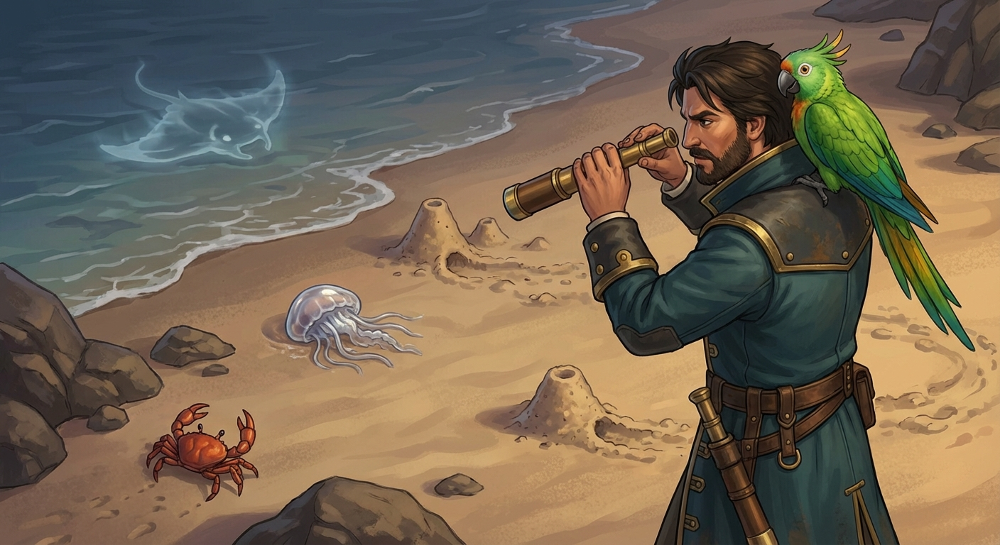
Creatures escalate in complexity as you progress through the archipelago
| Enemy | First Appears | Behaviour | Elite Variant |
|---|---|---|---|
| 🦀 Crab | Island 2 | Patrols between landmarks — the introductory enemy | 🔥 Fire Crab (faster, tougher) |
| Jellyfish | Island 3 | Drifts vertically — adds a second patrol axis | 👻 Shadow Jelly (harder to spot) |
| 🐛 Burrower | Island 4 | Hides underground, emerges near the player — surprise attacks | 🐍 Sand Wyrm (faster, wider range) |
| 🦔 Urchin | Elite only | Stationary area denial near landmarks — blocks access | — |
| 🦈 Phantom Ray | Elite only | Long diagonal patrol covering large areas — fast and dangerous | — |
Enemy spawns adapt to your skill. D-grade players face fewer enemies (novice assist). S/A-grade players face elite variants plus extra spawns like Urchins and Phantom Rays.
Found scattered across islands, the shield powerup absorbs one enemy hit — letting you pass through without triggering combat. Strategic players use shields to skip tough encounters.
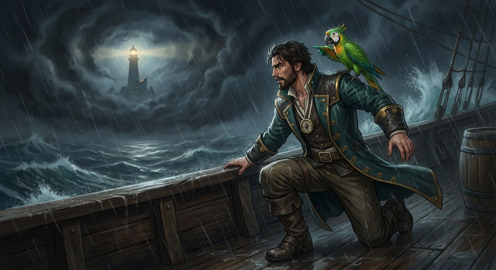
Fail fast, retry faster — always under 5 seconds back to action
Every fail state in the game gets you back to the action in under 5 seconds. No long game-over screens. No reload. Quick animation, immediate retry.
After 2 failures on the same prompt, your parrot Bit flies toward the correct landmark. Fog slows down. Lightning holds its flash longer. The game helps without telling you the answer.
Get everything right on the first try? Unlock hidden chambers, rare relics, bonus score multipliers, and ultimately the secret Hidden Reef island.
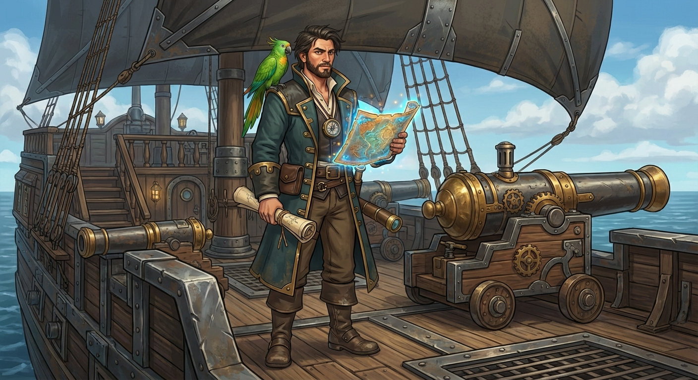
Your ship the Loci evolves as you progress — rewards make recall more forgiving, not more powerful
| Island | Upgrade | Effect | Rarity |
|---|---|---|---|
| Island 1 | — | Tutorial island, no upgrade | — |
| Island 2 | Reinforced Mast | 1.2× sailing speed, Bit flies faster during assists | ● Common |
| Island 3 | Enchanted Cannon | +1 error tolerance in pirate battles | ● Uncommon |
| Island 4 | Ironclad Hull | +1 storm hit resistance | ● Rare |
| Island 5 | Golden Compass | +2s recall window on all encounters | ● Epic |
| All Expert Bonuses | Ghostlight Lantern | Reveals the Hidden Reef secret island | ● Legendary |
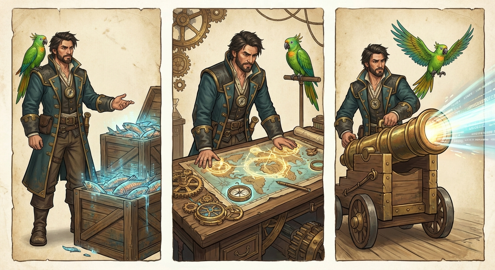
Every concept has a vivid physical metaphor — not a definition, but a memorable object
| AI Concept | Metaphor Object | Landmark | Why It Works |
|---|---|---|---|
| Training Data | 🐟 Fish crates full of sample catches | Dock Crates | Data is the raw material — just like fish in crates |
| Model | 🗺️ Captain's navigational chart | Chart Table | A model maps patterns — just like a chart maps the sea |
| Inference | 💥 Loaded cannon ready to fire | Cannon | Inference fires a conclusion — aim and shoot |
| Bias | 🧭 Crooked compass | Compass Pedestal | Always points slightly wrong — systematically off |
| Overfitting | 🪸 Barnacle-encrusted chest | Barnacle Chest | So over-decorated it won't open — too specific, too rigid |
| Neural Network | 🕸️ Signal ropes connecting mast lights | Rigging Web | Nodes (lanterns) connected by ropes, each lighting on signal |
| Gradient Descent | ⚓ Anchor lowering step-by-step | Anchor Winch | Finding the lowest point — one deliberate step at a time |
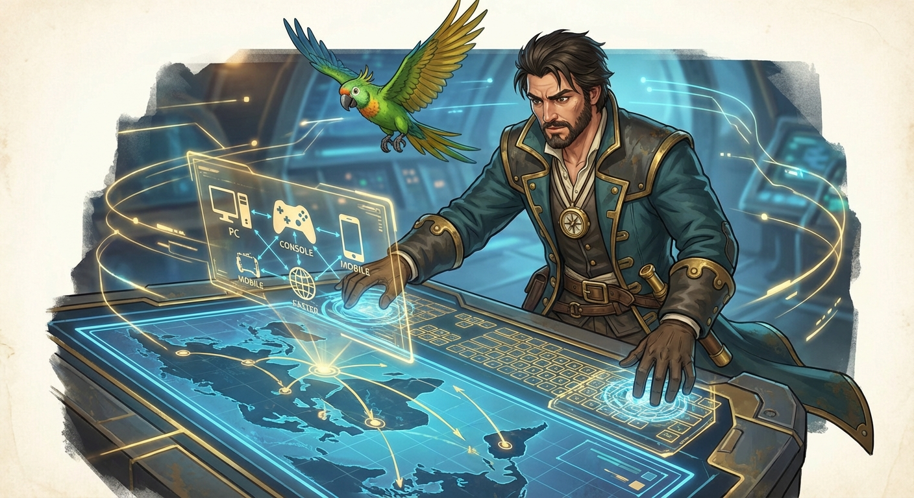
Play on phone or PC — every interaction works on both touch and keyboard/mouse
Portrait-first design. Primary actions in the lower ⅓ of the screen (thumb reach zone). Hazards in the upper ⅓. Tap to select, drag to place, swipe to navigate.
Click to select and place. Arrow keys or WASD to navigate. Keyboard shortcuts for quick recall. ±20% time parity with touch — neither input feels disadvantaged.
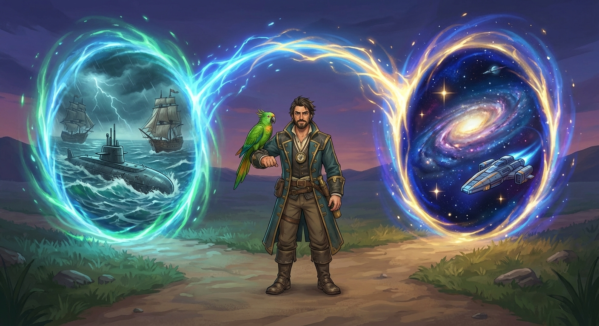
After the base campaign, choose your next style of challenge
Full learning loop: exploration, concept placement, recall encounters, and boss escalation across 5 islands.
Compact learning arc focused on cybersecurity fundamentals with 2 tightly paced islands.
Combat-only run structure with no concept cards or minigames — just escalating enemies and survival pressure.
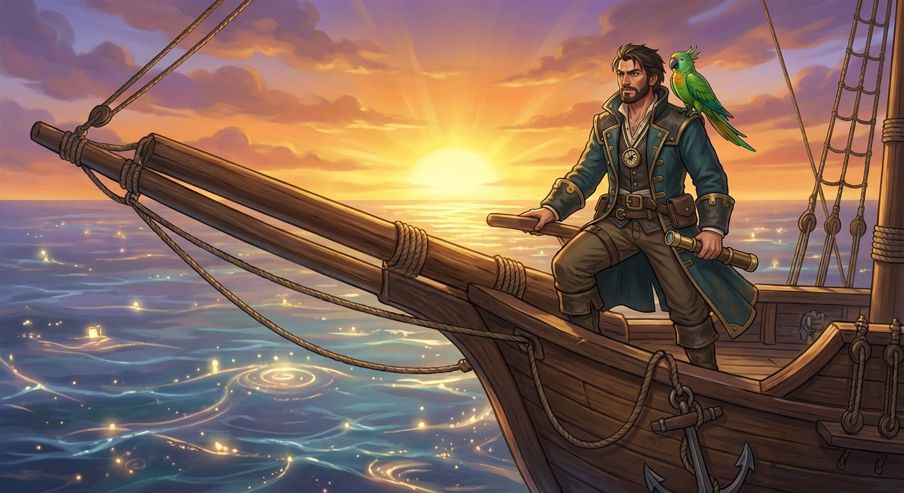